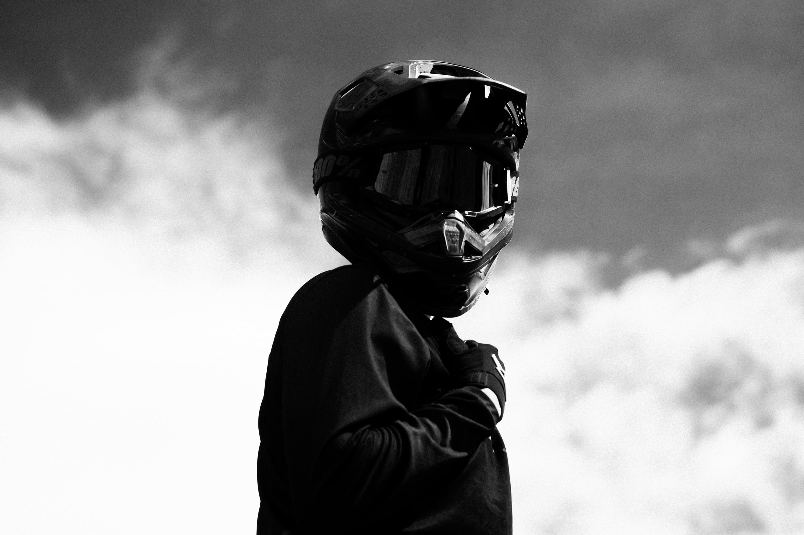

BY KNOX

↓ desliza
Knox es dirección creativa que busca devolverle lo humano a lo que creamos.
En una modernidad que nos aleja de nosotros mismos, diseñamos entornos para volver a sentirnos humanos. La tecnología acelera; las personas dan el sentido.